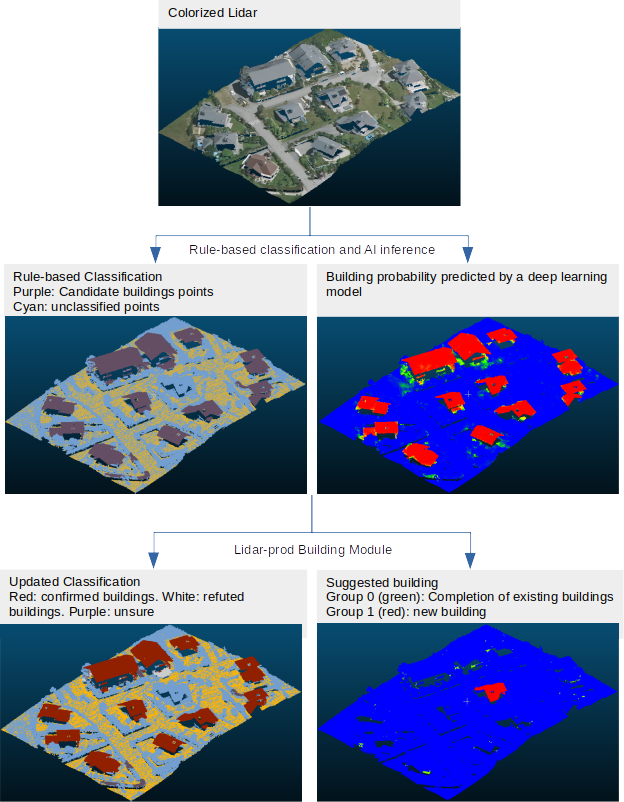

Production process used to transform point clouds classification¶
The end goal of the tool is to edit the input (rule-based) classification as much as we confidently can, and to highlight remaining areas of uncertainty for human inspection.
Input: point cloud that went through a first geometric algorithm that identified candidates building points based on geometric rules (e.g. plane surfaces, above 1.5m of the ground, etc.), and for which a semantic segmentation model produced a point-level probability of being a building, vegetation and/or unclassified, and calculate the associated entropy. The default name for those extra dimensions are building, vegetation, unclassified and entropy respectively. You can leverage this package for aerial lidar deep learning segmentation.
A.1) Vegetation detection¶
Goal: Confirm or refute points as vegetation.
The identification is done by comparing the vegetation probability of a point against a threshold. That threshold has been previously established as the best on a test set of las files.
A.2) Unclassified detection¶
Goal: Confirm or refute points as unclassified.
Exactly as with vegetation detection, the identification is done by comparing the unclassified probability of a point against a threshold. That threshold has been previously established as the best on a test set of las files.
B) Building Module¶

B.1) Building Validation¶
Goal: Confirm or refute groups of candidate building points when possible, mark them as unsure elsewise.
Clustering of candidate buildings points into connected components.
Point-level decision
Identification of points with ambiguous probability:
high entropyif entropy >= E1Identification of points that are
overlayedby a building vector from the database.Decision at the point-level based on probabilities :
confirmedif:p>=
C1, oroverlayedand p>= (C1*Cr), whereCris a relaxation factor that reduces the confidence we require to confirm when a point overlayed by a building vector.
refutedif (1-p) >=R1
Group-level decision :
Uncertain due to high entropy: if proportion of
high entropypoints >=E2Confirmation: if proportion of
confirmedpoints >=C2OR if proportion ofoverlayedpoints >=O1Refutation: if proportion of
refutedpoints >=R2AND proportion ofoverlayedpoints <O1Uncertainty: elsewise (this is a safeguard: uncertain groups are supposed to be already captured via their entropy)
Update of the point cloud classification
Decision thresholds E1, E2 , C1, C2, R1, R2, O1 are chosen via a multi-objective hyperparameter optimization that aims to maximize automation, precision, and recall of the decisions.
Current performances on a 15km² test dataset, expressed as percentages of clusters, are:
Automation=86.5%
Precision>=98%
Recall>=98%.
B.2) Building Completion¶
Goal: Confirm points that have high-enough probability, but where not confirmed because
(a) they were too scattered for clustering during validation, or
(b) they were not candidate buildings points.
Cluster high-proba points (p >= 0.5) with previously confirmed building points in a vertical fashion (XY plan). For each cluster that includes already confirmed points, the rest (i.e. high probability points) are considered to belong to the same building. Then, it is one of two things:
If (a), then these candidate points are confirmed.
If (b), then these non-candidate points are added as a Group, for later human inspection/confirmation. This is to avoid a direct modification of the Classification dimension taking place outside of the scope of buildings detected in rule- based software.
B.3) Building Identification¶
Goal: Highlight potential buildings that were missed by the rule-based algorithm, for human inspection.
Among points that were not candidate buildings points and not already confirmed, identify those with high enough probabiltity (p >= 0.5) and cluster.
This clustering defines a LAS extra dimensions (Group) which indexes newly found cluster that may be buildings.